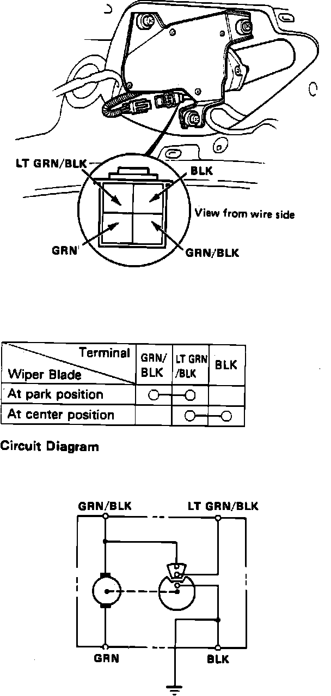

Rear Window Motor Test
Fig. 10 Rear Wiper Motor Connector:

1. Remove hatch trim panel.
2. Disconnect rear wiper motor electrical connector, Fig. 10.
3. Connect positive battery voltage to black/green terminal and negative to green terminal, motor operation should be indicated.
4. If operation is not as indicated, replace motor.